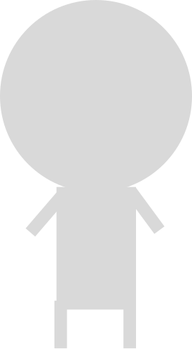

Alicia
Montgomery
front-end
developer
I am a recent graduate pursuing my web development dream.
Ever since I was young, I’ve been drawn to pretty things. It wasn’t until I was older that I started to understand that there was a human behind those designs. One of the reasons I was drawn to front-end development is because I could take beautiful designs and turn them into functional “art”. I’ve been hooked ever since. Taking someone or my own designs and bringing them to life is my favorite part of the process.
I recently graduated with a Master’s in IT while working full time. I am now working on my skills to become an upstanding front-end engineer.
When not working, I can be found making art, creating a video game (and playing them!), and watching anime.
Check out my Work!
Spa Website Redesign

GBCS Group Website Revamp